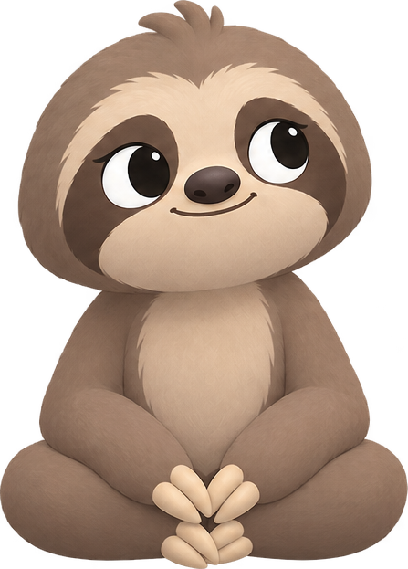

The Save session screen is gone. A finished session takes you straight to Home, where Otto's glow climbs with a burst of light and a +10% (built, on the simulator now). This page is the next two pieces: where the prompt to fill in the session lives, and the one screen it opens. Nothing here is built yet. Pick a prompt (A to D) and a screen (1 or 2).
